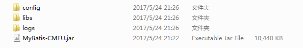
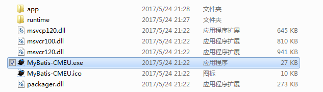
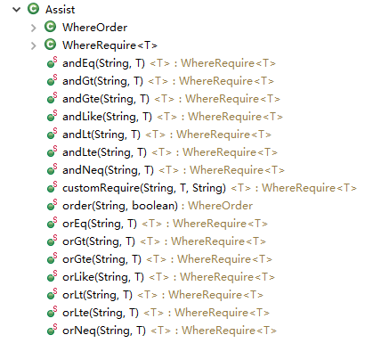

mirren的工具箱
mirren的工具箱
MyBatis-CMEU全称为:MyBatis Config Mapper Entity Util
简单来说MyBatis-CMEU是一款使用Javafx开发的MyBatis逆向工程帮助工具,该工具支持Oracle,Mysql,SqlServer,PostgreSql等数据库的生成,
使用该工具你只需要连接数据库,选择你需要的表(CMEU2.0支持3表关联),点击执行创建,
工具就会帮你生成实体类以及持久层(dao)接口/逻辑层(service)接口/逻辑层(serviceImpl)实现类/映射文件(Mapper)的增删改查;
Assist类是专门为MyBatis-CMEU设计的帮助类,该类可以无SQL注入的实现动态查询,排序,去重等操作; 当数据需要分页时通过Assist只需设置两个参数便可以实现分页;
关于MyBatis-CMEU运行要求,运行时文件存放路径不能存在中文;CMEU窗体基于javafx8,语法使用大部分java8特性,开发使用环境使用1.8.66，已知使用特性中最低要求为1.8.40，所以运行环境要求JDK1.8.66及以上
官方QQ交流群号: 519714660
通用版:
免JDK版:
config:用于存放数据库,配置信息等,为sqlite数据库文件;
libs:用于存放CMEU所需jar包,以及数据库连接jar包(可自己更换);
logs:用于存放CMEU运行时的系统日志,其info文件夹为普通日志,error文件夹为异常日志;
app:app文件夹与通用版一致;
runtime:runtime为java运行所需jre等文件,
通用版运行环境要求:运行该工具需要JDK1.8.66及以上;因为本工具使用的信息提示为jdk1.8.40的特新,开发环境基于jdk1.8.66开发,当系统中存在JDK1.8.66以上(最少已知的特新中要求jdk版本号大于1.8.40),双击便可运行;
免JDK版运行环境要求:文件存放路径中不存在中文路径,存在中文路径可能无法运行,双击其系统对应运行文件便可,比如Windows版运行.exe便可;第一次启动可能比较慢请耐心等候;
连接名称用于保存当前连接,名字用户自定义,当保存后将会显示在首页左侧树形菜单
主机名/Ip地址指定数据库的地址,比如本机的localhost或者127.0.0.1
端口号为数据库的端口号比如oracle:1521
CMEU目前支持4种数据库,通过下拉框选择相应的数据库,比如:选择Oracle
数据库为你所要连接的数据库名称,比如:连接的数据库名叫orcl,那么则填写orcl便可
数据库连接的用户名:比如:scott
数据库连接的密码:比如:tiger
编码格式:如果数据库有编码格式要求则下拉选择,如果数据库没有要求编码格式则不需要理会
当所有选项填写完毕后,点击测试连接;如果连接成功便会提示连接成功,如果连接失败有可能是因为数据库架包不兼容, 或者是数据库服务没有打开,失败系统会给出相应的提示;如果是架包不兼容可以往下查看注意事项;
如果连接成功,便可以选择保存连接完成数据库;
系统默认集成的版本分别是:
Oracle=Oracle6.jar
SqlServer=sqljdbc2008.jar
MySql=mysql-connector-java-5.1.38.jar
PostgreSql=postgresql-9.4.1209.jar
如果跟你的版本不一致可以到libs(免JDK版在app/libs)里面将架包改成你的架包,但是命名规则为:数据库小写JBDC大写
示例:sqlserverJDBC.jar
配置信息用于保存首页的相关配置,比如包名,文件资源路径等,通过首页的保存配置按钮新建配置信息;
系统启动时如果配置信息中存在名为default的配置文件,系统将默认加载default配置信息,所以如果是常用的配置信息可以采用default命名
可以通过配置信息->操作->加载配置;将已经保存的信息重新加载到首页;
可以通过配置信息->操作->删除配置;确定便可;
可以选择创建实体类的习惯并保存,后面生成实体类就会根据你的设置进行生成,
如果保存报错可能是因为旧版本的config.db跟新版本的config.db不兼容,可以删除config文件夹中的config.db再执行
当添加数据库连接后,可以双击显示数据库中所以的表,也可以用过右键打开/关闭/修改/删除现有的数据库连接;
通过双击选择所要创建的表名将表的信息加载至右侧数据面板;
输入或者通过按钮选择项目的目录 (也就是路径+项目名称);
占位符主要作用于类似Maven/Gradle等采用src/main/java等源码规范路径,假设我们生成的文件要放置在,src/maim/java /com/cmeu/dao中,src/maim/java是源码路径,com/cmeu/dao是项目中的包,这时我们就可以这样写 {maim/java}com.cmeu.dao或者{maim.java}com.cmeu.dao ,CMEU生成的时候就会自动把{maim/java} 识别成源码文件夹,把com.cmeu.dao识别为项目中的包,(src)已经在项目跟目录选择添加了,所以src可以不用再写 ps:个人觉得这个占位路径是个好东西
如果已经存在MyBatis配置文件,可以输入或者通过按钮选择MyBatis配置文件所在路径,系统将自动将你新建的映射文件自动更新到mappers中;
如果不存在配置文件,可以使用勾选创建配置文件;
系统多大部分选择框相关的都有tooltip提示说明:将鼠标悬停在其上后便会做出相应的提示;
当选择创建service时系统将会生成相对应的service接口以及serviceImpl实现类;
注意事项:生成的serviceImpl中dao并没有赋值,只是单纯的声明了dao具体实现根据自己的需要配置,比如Spring注入或者通过MyBatisUtil获得dao的实现;
创建查询工具Assist,推荐创建,因为有它,能很多事情都会变得超级方便;
创建MyBatis的主配置文件,系统会自动根据你连接的数据库类型生成一个默认的environments连接以及创建mapper的资源路径;
创建MyBatis的帮助工具,用于获取sqlsession,如果你已经创建了MyBatis配置文件,帮助工具将自动帮你读取配置文件,你可以通过它获得sqlSession等;
文件编码格式为文件所有文件以什么方式的格式编码生成;默认以选择utf-8,如果你需要用到GBK编码格式下拉选择便可;
当选勾该项后如果有创建service层的话,serviceImpl会在类加上@Service注解,调用了Dao层接口的会加上@Autowired注解
用于将数据面板的数据保存到配置中心,注意事项:配置名称不能重复;如果有重复请先删除原来的配置
点击修改属性进入属性页面,你可以更改类的属性信息,比如数据类型,添加新的属性,集合,子表,主键策略...等等的操作;
执行创建将完成所有数据面板上的所有类/dao/service的生成;注意事项:项目所在目录以及表名不能为空;
与首页一样大部分选择框鼠标悬浮在其上都会显示tooltip提示;
属性表格中:你可以选择是否创建该行属性,创建打钩,不创建取消打钩; 表中的列名与jdbc数据类型无法修改,java数据类型以及属性名可以自己修改成自己想要的类型/名称, java数据类型可以自己输入或者下拉选择,属性名双击列便可以输入新的名称回车修改;
将鼠标悬浮到其选择框上面停留将会出现相应的提示!
表的别名用于Mapper映射文件中resultMap节点属性列对应的映射列, 如果起了别名resultMap的id/column属性将会以别名_列的名字命名,如果没有起别名将会以类名+属性从上到下的序号编号; 之所以有这个属性是为了当存在相同列名时是不会冲突;
系统会自动识别表中的主键,如果识别有误的话可以自己改正;
类型输入你要创建属性的类型;名称输入你要创建的属性名称;点击->添加 便会将属性添加到类中;
选择生成主键策略后系统会根据你的数据库类型为你生成基础的模板,这个时候你需要补充输入框中缺乏的信息,比如上图的示例中为Oracle的主键策略,但是还缺少了序列的名称,这个时候你需要将序列名补充上;
点击添加表作为属性/集合时将会打开一个新的窗口,这个时候你可以选择相应的表来做为当前类的一个属性,系统将自动为你生成关联你可以一次查询到想要的信息(目前支持3层关系),界面请看下一节添加新表说明;
当点击确定的时候完成当前的所以修改;当点击取消的时候系统会提示你如果取消的话所有的修改将无效,这个时候你可以选择取消操作或者确定操作;
在修改属性页中点击添加表作为属性/添加表作为集合打开本窗体后,如上图所显示;
左侧与修改属性页基本一致的功能,只是多了一个数据库表的列表,
双击选择左侧列表中的表将其加载至属性表格中,如果类型不合适可以自己修改;
全部生成只是一个勾选的功能,当你点击全部生成后,生成实体类/dao/service...等都会跟着该选择框一起变化
当需要生成实体类或者service等等的可以勾选相应的选择框,不勾选就不创建生成,如果文件已经存在会覆盖原文件,文件包名将以首页的相应包名为该文件的包名;
主键策略与修改属性页面一致,选择主键策略补充缺乏的信息便可
点击添加表作为属性/集合时将会打开第三个窗口,选择新的窗口,新窗口与当前基本一致界面如下图,只是第三个窗口不能再继续添加属性或者集合;
该功能用于当添加属性或者集合时指明该表与上一级的表连接关系,三种连接方式自己选择,系统会识别上一张表的名称,以及主键列,并补充至其输入框中,如果连接表输入框中或者连接列输入框中的连接信息有误可以自己修改;
当前窗体连接表/连接列的输入框的信息为上一级的信息,表示当前窗体与上一级的连接关系;
//-----------------拥有Assist帮助类接口--------------------
long get类名RowCount(Assist assist);
List<类型> select类名(Assist
assist);
List<类型> select类名OfPaging(Assist assist);
类型 select类名ByObj(类名 obj);
类型
select类名ById(Integer
id);
int insert类名(类型 value);
int insertNonEmpty类名(类型 value);
int insert类名Batch(List<类型> value);
int delete类名ById(主键类型 id);
int delete类名(Assist assist);
int update类名ById(类型 enti);
int updateNonEmpty类名ById(类型 enti);
int update类名(@Param("enti") 类型
value, @Param("assist") Assist assist);
int updateNonEmpty类名(@Param("enti") 类型
value, @Param("assist") Assist assist);
//-----------------没有Assist帮助类接口--------------------
long get类名RowCount();
List<类型> select类名();
类型
select类名ByObj(类名
obj);
类型 select类名ById(Integer id);
int insert类名(类型 value);
int insertNonEmpty类名(类型 value);
int insert类名Batch(List<类型> value);
int delete类名ById(主键类型 id);
int update类名ById(类型 enti);
int updateNonEmpty类名ById(类型 enti);
该方法用于获得查询数据总行数,返回类型为long类型,当没有生成Assist时为无参方法,当有Assist帮助类时参数为Assist为帮助类,如果你需要设置条件那么就创建一个Assist传入,如果没有条件那么直接就传null便可;关于Assist如何使用请看下一节Assist使用说明;
该方法用于获取所有数据,返回类型为List<类型> ,当没有生成Assist时为无参方法,当有Assist帮助类时参数为Assist为帮助类,如果你需要设置条件那么就创建一个Assist传入,如果没有参数那么直接就传null便可;关于Assist如何使用请看下一节Assist使用说明;
该方法为特别的方法,也是Assist特有的方法,并不是每个接口都会生成该方法,只有当你生成的类中存在集合时,系统才会生成该方法,该方法主要用于分页是使用,
由于MyBatis的sql映射机制,如果采用结果映射,那么分页获取出来的数据,在类中集合(子表类)就会缺少数据,所以只能使用嵌套查询,该方法其SQL语句采用的就是嵌套映射,每查一次主表就去查一次子表;
所以使用中如果需要获取带有集合属性的类且需要分页就采用该方法,如果获取全部信息的话直接使用不带OfPaging的查询方法便可以了,因为效率比该方法高;
该方法用于获取所有数据(分页不缺少数据),返回类型为List<类型>
,参数为Assist为帮助类,如果你需要设置条件那么就创建一个Assist传入,如果没有参数那么直接就传null便可;关于Assist如何使用请看下一节Assist使用说明;
该方法用于通过对象获取中不为null的属性到数据库中查询得到一个返回对象
该方法用于通过主键编号获取数据,返回的类型为实体类的类型,参数为类型主键列对应属性的类型;生成时系统会自动识别主键的数据类型,如果识别有误可以自己手动修改主键的类型;
该方法用于将实体类中的全部数据持久化到数据库,返回受影响的行数类型为int类型,参数为实体类的类型;
该方法用于将实体类中值不为null的数据持久化到数据库,返回受影响的行数类型为int类型,SQL语句会自动回将不会null的数据进行插入;
该方法用于将实体类集合插入到数据库中,主要用于批量插入
该方法为用于通过主键列对应的属性,删除数据库中对应的数据,返回受影响的行数类型为int类型,参数为主键列对应属性的类型,系统在生成时会自动识别主键列对应的java数据类型,如果识别有误请自己手动修改;
该方法用于删除数据库中条件满足Assist帮助类所设置条件的数据,,返回受影响的行数类型为int类型,该方法为Assist特有的方法,参数为Assist为帮助类,关于Assist如何使用请看下一节Assist使用说明;
该方法用于通过主键更新实体类中的全部的属性(包括值为null的属性)到数据库,返回受影响的行数类型为int类型,参数为对应的实体类;
该方法用于通过主键更新实体类中值不为null的属性到数据库,返回受影响的行数类型为int类型,参数为对应的实体类;
该方法为Assist帮助类特有的方法,用于将实体类中的全部的属性(包括值为null)更新到符合Assist条件的表中,返回受影响的行数类型为int类型,参数1 enti为对应的实体类,参数2 为Assist类;
该方法为Assist帮助类特有的方法,用于将实体类中值不为null的属性更新到符合Assist条件的表中,返回受影响的行数类型为int类型,参数1 enti为对应的实体类,参数2 为Assist类;
Assist是特别为CMEU定制的查询帮助类,一个项目一个Assist类足以在全部地方使用,生成文件时如果你要继续使用Assist必须选择生成Assist,系统会自动检测是否存在Assist,如果存在Assist系统不会再次创建;如果不存在才会创建;
distinct为是否去除重复的数据,当需要去重时调用Assist对象的setDistinct(boolean)方法;true为去重,不去重则不需要理会
order为对数据进行排序,当需要排序时调用Assist对象的setOrder(String column, boolean mode)方法;column参数为要排序的列名,mode参数 true 为正序排序,false为倒序排序
startRow:从第几行开始取数据;
rowSize:每次取多少行数据;
以上示例分页中,分别是获得dao接口,创建一个Assist对象,设置从第10行开始取数据,取5行数据->执行,取出来的数据就是第10行到第15行的数据;当然你可以通过long get类名RowCount(Assist assist);方法来获得总行数等;
resultColumn为自定义返回的列,比如表中有5列,你只想取出2列,这个时候你就可以调用Assist对象的setResultColumn(String resultColumn)方法,
参数为想要取出的列,多个列以逗号,分开;比如要取出id跟名字那么参数的参数值就为===>"id
as 别名 , name as 别名";
特别需要注意的事项:你看到as 别名 ;也许对这有点疑惑为什么这样做吧,起别名是为了防止存在重复或别名太长导致报错,所以采用别名的方式:
所以当自定义返回列的时候必须起一个别名,别名也是有规则,以mapper映射文件中的resultMap节点的id/column属性名称为主;
别名的规律有两种规律:
第一种规律为:当你给表起了别名时规律为:别名_表的列明;
第二种规律为:类名+属性的顺序;
比如:public class Test(){ ...id... ...name...;id距离类名中间0个属性,那么就是Test0,name距离类名有1个参数那么别名就是Test1;
有一种最简单的做法就是直接到Mapper里面找sql节点,<sql id="类名_Column">中找到想要的列直接copy;
简单一句话:自定义返回列名时需要给列起一个别名,别名的必须与mapper中resultMap节点对应的属性一致;
该参数只在查询全部信息时有用,ById与OfPaging中无效;
require属性为条件集,当查询的时需要条件,就可以调用Assist对象的setRequires(whereRequire...
require)方法,参数whereRequire类型是Assist的内部条件类,参数个数无限,可以直接使用Assist的静态条件方法传入条件;有以下静态条件方法:

静态条件方法使用为:Assist.xxxXxx("表名.列名","值");当只操作一张表或者没有重复列名的时候可以只写列名,
当然如果静态条件方法不满足你也可以新建一个对象传入;